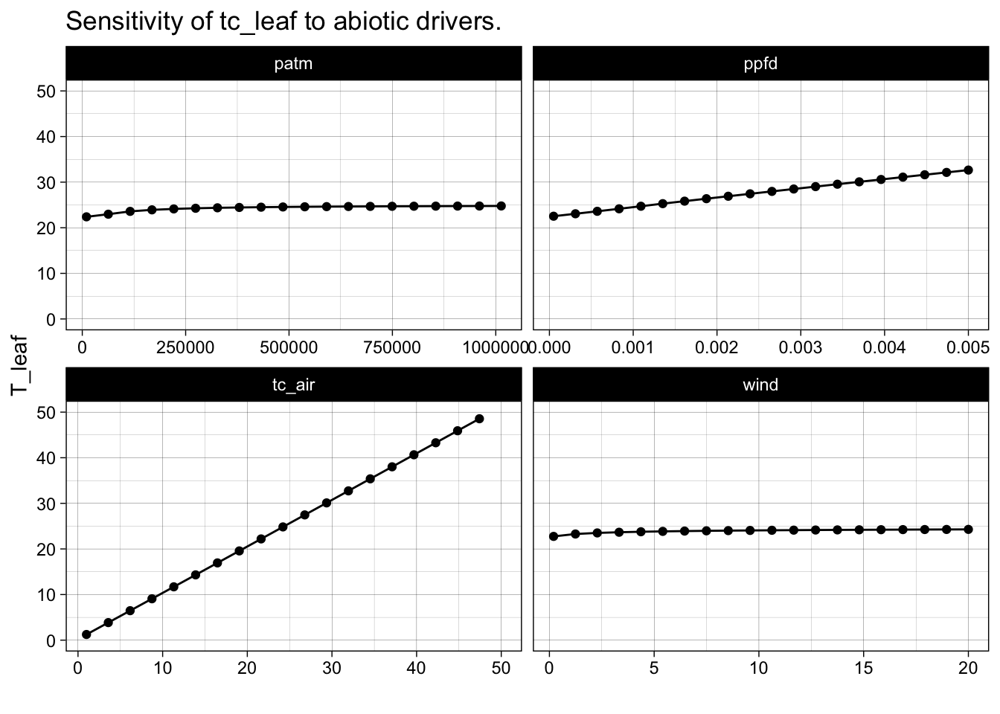
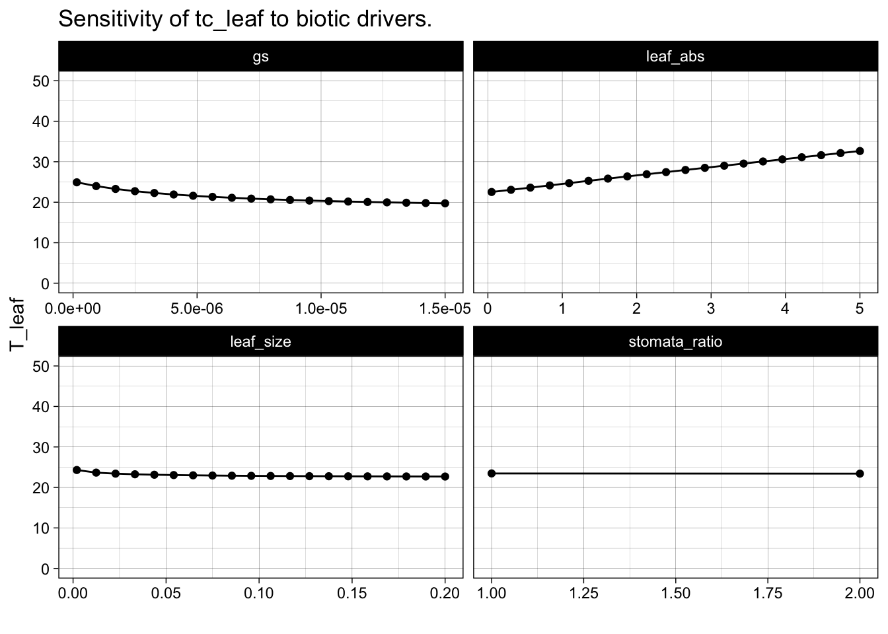
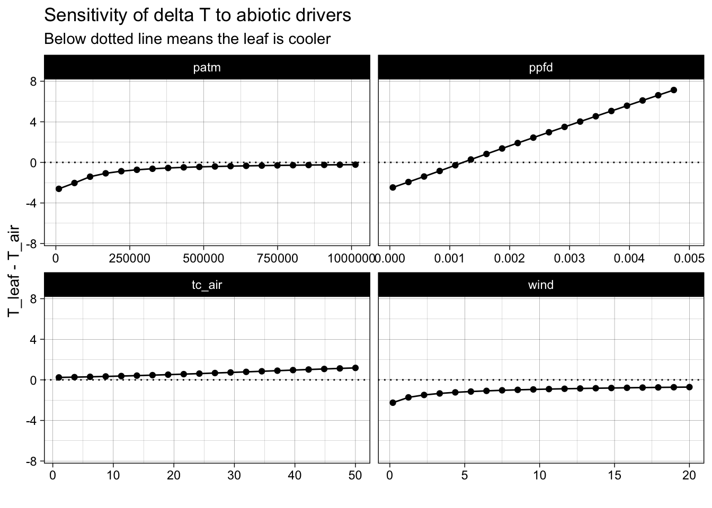
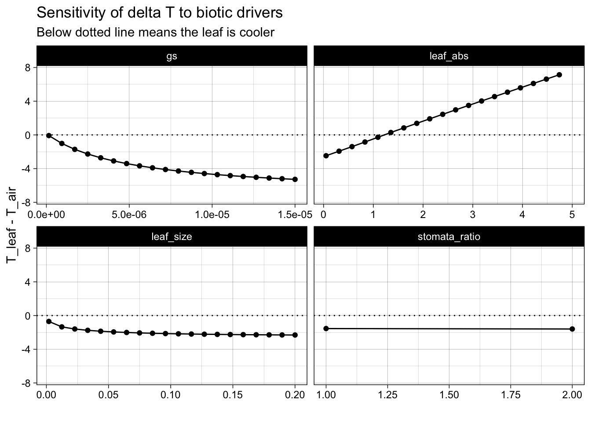
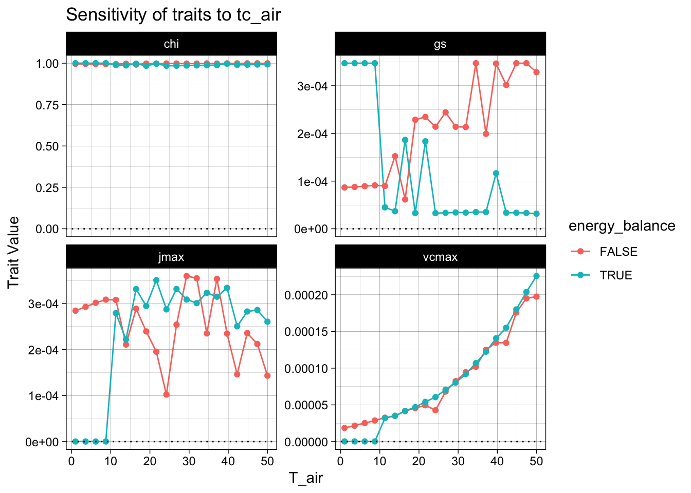
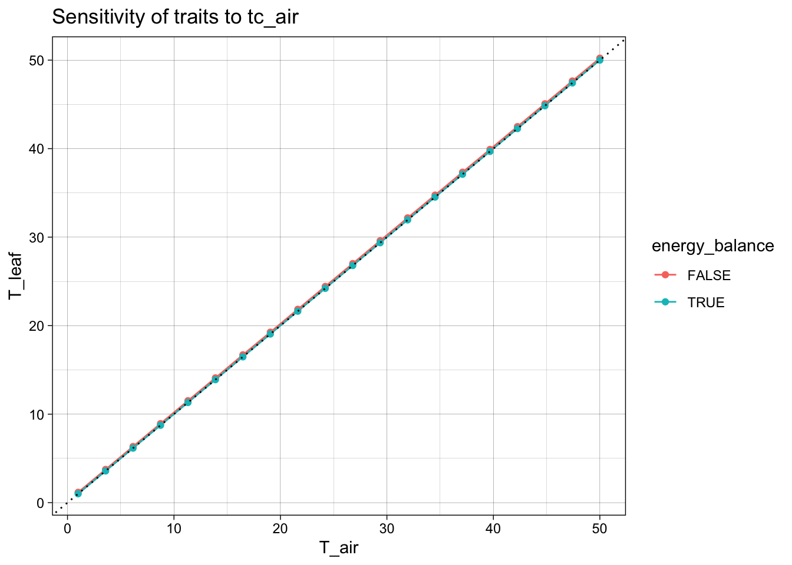

3 Algorithm
3.1 Description
The goal of this algorithm is to predict a leaf temperature at which the costs for maintaining photosynthesis are minimal. To do this, two optimization algorithms are required as displayed in Figure 3.1, the numerical P-Model algorithm and the energy balance algorithm.
The numerical P-Model algorithm solves the optimization problem to find the values for \(V_{cmax}\), \(J_{max}\), and \(g_{s}\) at which the carbon costs for maintaining photosynthesis are minimal (explained in Chapter 2):
\[ \frac{\beta \;V_{cmax} + 1.6\;D\;g_s + c \;J_{max} }{A_{gross}} = min. \]
The energy balance algorithm searches for the leaf temperature that closes the energy budget described in Chapter 4. Certain terms within the energy balance depend on assuming a leaf temperature in the first place. This turns the algorithm into an optimization problem where the goal is to minimze the difference between the initially assumed leaf temperature (\(T_{\text{leaf, init}}\)) and the leaf temperature that closes the energy balance (\(T_{\text{leaf, eb}}\)):
\[ T_{\text{leaf, init}} - T_{\text{leaf, eb}} = min. \]
The algorithm visualized in Figure 3.1 reads as follows:
1. Pick random values for vcmax, jmax, gs
2. Pick random value for tc_leaf (initial leaf temperature)
3. Calculate the energy balanced given tc_leaf, gs, abiotic environment
4. Check if initial tc_leaf equals tc_leaf that closes the energy balance:
If false, re-run energy balance with a new tc_leaf
If true, then proceed
5. Use tc_leaf, vcmax, jmax, gs, abiotic environment to calculate the carbon costs
6. Check if carbon costs are minimal
If false, re-start at 1. with new parameters for vcmax, jmax, and gs
If true, return tc_leaf, vcmax, jmax, gsDescribe all functions used in here
Functions needed
Numerical optimization routine for
Leaf Energy Balance
For Vcmax/gs
Cost function
Visualise cost optimization
Explain nested optimization
Closing the Energy Balance
Cost Minimization
3.2 Implementation
The individual algorithms described above are based on two functions - one function to calculate the quantitiy to be optimized and one function for handling the optimization. Below are demonstrations for calling the algorithms separately and coupled. All functions can be found in the R directory of this repository.
# Get standard conditions for abiotic and biotic conditions:
tc_air <- 25 # degC
tc_leaf <- 30 # degC
vpd_air <- 2000 # Pa
patm <- 101325 # Pa
co2 <- 400 # ppm
ppfd <- 500e-6 # mol/m2/s
vcmax <- 50e-6 # mol/m2/s
jmax <- 100e-6 # mol/m2/s
gs <- 1.5e-6 # mol CO2 /m2/s/Pa
fapar <- 1 # -
kphio <- 0.087 # -
beta <- 146 # -
c_cost <- 0.103 # -
wind <- 2 # m/s
leaf_size <- 0.02 # m
stomata_ratio <- 1 # -
leaf_abs <- 0.5 # -3.2.1 Numerical P-Model
Below is a demonstration of the numerical P-Model algorithm without considering the leaf energy balance. Comparing the results of the numerical P-Model against the analytical P-Model shows that they achieve a similar \(\chi \approx0.68\) but with quite different values for \(V_{cmax}\), \(J_{cmax}\), and \(g_{s}\)
# Analytical P-Model
rpmodel::rpmodel(
tc = tc_air,
vpd = vpd_air,
co2 = co2,
fapar = 1,
ppfd = ppfd,
patm = patm,
kphio = kphio
) |> as_tibble() |> knitr::kable()| gpp | ca | gammastar | kmm | ns_star | chi | xi | mj | mc | ci | iwue | gs | vcmax | vcmax25 | jmax | jmax25 | rd |
|---|---|---|---|---|---|---|---|---|---|---|---|---|---|---|---|---|
| 0.0001183 | 40.53 | 4.332 | 70.84225 | 1 | 0.6868433 | 82.82301 | 0.6439624 | 0.2382018 | 27.83776 | 7.93265 | 8e-07 | 4.13e-05 | 4.13e-05 | 6.53e-05 | 6.53e-05 | 6e-07 |
# Numerical P-Model
optimize_traits_and_costs(
tc_air = tc_air,
vpd_air = vpd_air,
patm = patm,
co2 = co2,
ppfd = ppfd,
kphio = kphio
) |> knitr::kable()| vcmax | jmax | gs | ci | chi | a_c | a_j | a_gross | ci_c | ci_j | cost_transp | cost_vcmax | cost_jmax | carbon_costs | include_energy_balance | tc_air | tc_leaf |
|---|---|---|---|---|---|---|---|---|---|---|---|---|---|---|---|---|
| 7.8e-05 | 0.0004173 | 1.5e-06 | 27.79729 | 0.6858447 | 1.85e-05 | 1.86e-05 | 1.85e-05 | 27.79729 | 27.79325 | 402.6706 | 983.3292 | 3.713537 | 867.3698 | FALSE | 25 | 25 |
3.2.1.1 Relevant Functions
calculate_traits_and_costs()
function (par, tc_air, vpd_air, ppfd, fapar = 1, co2, patm, kphio,
beta = 146, maximize = FALSE, return_all = TRUE, units_out = "per-s",
include_energy_balance = FALSE, ...)
{
vcmax <- par[1]
jmax <- par[2]
gs <- par[3]
if (include_energy_balance == TRUE) {
tc_leaf <- optimize_leaf_energy_balance(tc_air = tc_air,
vpd_air = vpd_air, gs = gs/3600/24, ppfd = ppfd/3600/24,
patm = patm, ...)
vpd_leaf <- air_vpd_to_leaf_vpd(vpd_air, tc_air, tc_leaf)
}
else {
tc_leaf <- tc_air
vpd_leaf <- vpd_air
}
kmm <- rpmodel::kmm(tc_leaf, patm)
gammastar <- rpmodel::gammastar(tc_leaf, patm)
ns_star <- rpmodel::viscosity_h2o(tc_leaf, patm)/rpmodel::viscosity_h2o(25,
101325)
ca <- rpmodel::co2_to_ca(co2, patm)
kphio <- kphio * rpmodel::ftemp_kphio(tc_leaf, c4 = F)
iabs <- ppfd * fapar
L <- 1/sqrt(1 + ((4 * kphio * iabs)/jmax)^2)
A <- -gs
B <- gs * ca - 2 * gammastar * gs - L * kphio * iabs
C <- 2 * gammastar * gs * ca + L * kphio * iabs * gammastar
ci_j <- QUADM(A, B, C)
a_j <- kphio * iabs * (ci_j - gammastar)/(ci_j + 2 * gammastar) *
L
c_cost <- 0.103
A <- -1 * gs
B <- gs * ca - gs * kmm - vcmax
C <- gs * ca * kmm + vcmax * gammastar
ci_c <- QUADM(A, B, C)
a_c <- vcmax * (ci_c - gammastar)/(ci_c + kmm)
ci <- max(ci_c, ci_j)
a_gross <- min(a_j, a_c)
carbon_costs <- get_carbon_costs(vpd_leaf = vpd_leaf, ns_star = ns_star,
gs = gs, vcmax = vcmax, jmax = jmax, beta = beta, c_cost = c_cost,
a_gross = a_gross, cost_type = "relative_carbon_costs")
if (return_all) {
if (units_out == "per-s") {
vcmax <- vcmax/(3600 * 24)
jmax <- jmax/(3600 * 24)
gs <- gs/(3600 * 24)
a_c <- a_c/(3600 * 24)
a_j <- a_j/(3600 * 24)
a_gross <- a_gross/(3600 * 24)
}
return(tibble(vcmax = vcmax, jmax = jmax, gs = gs, ci = ci,
chi = ci/ca, a_c = a_c, a_j = a_j, a_gross = a_gross,
ci_c = ci_c, ci_j = ci_j, cost_transp = carbon_costs$cost_transp,
cost_vcmax = carbon_costs$cost_vcmax, cost_jmax = carbon_costs$cost_jmax,
carbon_costs = carbon_costs$carbon_costs, include_energy_balance = include_energy_balance,
tc_air = tc_air, tc_leaf = tc_leaf))
}
else {
return(carbon_costs$carbon_costs)
}
}
<bytecode: 0x125bdb858>
get_carbon_costs()
function (ns_star, gs, vpd_leaf, beta, vcmax, c_cost, jmax, a_gross,
cost_type)
{
cost_options <- c("relative_carbon_costs")
if (!(cost_type %in% cost_options)) {
stop("get_carbon_costs: Requested cost type not implemented.")
}
cost_transp <- 1.6 * ns_star * gs * vpd_leaf
cost_vcmax <- beta * vcmax
cost_jmax <- c_cost * jmax
if (cost_type == "relative_carbon_costs") {
carbon_costs <- (cost_transp + cost_vcmax + cost_jmax)/a_gross
}
out <- list(cost_transp = cost_transp, cost_vcmax = cost_vcmax,
cost_jmax = cost_jmax, carbon_costs = carbon_costs)
}
<bytecode: 0x124cac910>
optimize_traits_and_costs()
function (tc_air, vpd_air, patm, co2, ppfd, kphio, include_energy_balance = FALSE,
vcmax_start = NA, jmax_start = NA, gs_start = NA, ...)
{
ppfd <- ppfd * 3600 * 24
vcmax_start <- 20
jmax_start <- 20
gs_start <- 0.3
out_optim <- optimr::optimr(par = c(vcmax_start, jmax_start,
gs_start), upper = c(vcmax_start * 1000, jmax_start *
1000, gs_start * 100), lower = c(vcmax_start/1000, jmax_start/1000,
gs_start/100), fn = calculate_traits_and_costs, method = "L-BFGS-B",
control = list(maxit = 1000), tc_air = tc_air, vpd_air = vpd_air,
patm = patm, co2 = co2, ppfd = ppfd, kphio = kphio, include_energy_balance = include_energy_balance,
maximize = TRUE, return_all = FALSE, ...)
optimized_par <- calculate_traits_and_costs(par = out_optim$par,
tc_air = tc_air, vpd_air = vpd_air, patm = patm, co2 = co2,
ppfd = ppfd, kphio = kphio, include_energy_balance = include_energy_balance,
units_out = "per-s", return_all = TRUE, ...)
return(optimized_par)
}
<bytecode: 0x14396a148>3.2.2 Energy Balance
Below is a demonstration of the energy balance functions and a sensitivity analysis.
diff_tcleaf <-
calculate_leaf_energy_balance(
tc_leaf = tc_leaf,
tc_air = tc_air,
gs = gs,
ppfd = ppfd,
vpd_air = vpd_air,
patm = patm,
return_what = c("balance")
)
leb_fluxes <-
calculate_leaf_energy_balance(
tc_leaf = tc_leaf,
tc_air = tc_air,
gs = gs,
ppfd = ppfd,
vpd_air = vpd_air,
patm = patm,
return_what = c("fluxes")
)
cat("\nThe squared difference between input tc_leaf and",
"\nenergy-balance-closure tc_leaf is: ", diff_tcleaf)
The squared difference between input tc_leaf and
energy-balance-closure tc_leaf is: 6.507787
The energy balance variables at this state are: | ELEAFeb | Gradiation | Rsol | Rnetiso | Rlongup | H | lambdaET | gw | Gbh | H2 | tc_leaf2 |
|---|---|---|---|---|---|---|---|---|---|---|
| 3.312554 | 0.1949628 | 218.8184 | 11.49047 | 454.922 | 416.2046 | 145.5992 | 0.2252718 | 2.845609 | -125.5096 | 23.49221 |
tc_leaf_eb <-
optimize_leaf_energy_balance(
tc_air = tc_air,
vpd_air = vpd_air,
gs = gs,
ppfd = ppfd,
patm = patm,
)
cat("Given the environment and gs, tc_leaf is: ", tc_leaf_eb)Given the environment and gs, tc_leaf is: 23.459963.2.2.1 Relevant Functions
calculate_leaf_energy_balance()
function (tc_leaf = 21.5, tc_air = 20, gs = 1.5e-06, ppfd = 0.0015,
vpd_air = 2000, patm = 101325, wind = 2, leaf_size = 0.02,
stomata_ratio = 1, leaf_abs = 0.5, return_what = c("balance",
"fluxes"))
{
return_what <- match.arg(return_what)
gs <- 1.6 * gs * patm
ppfd <- ppfd * 10^6
Boltz <- 5.67 * 10^-8
Emissivity <- 0.95
LatEvap <- 2.54
CPAIR <- 1010
H2OLV0 <- 2501000
H2OMW <- 0.018
AIRMA <- 0.029
AIRDENS <- 1.204
UMOLPERJ <- 4.57
DHEAT <- 2.15e-05
AIRDENS <- patm/(287.058 * celsius_to_kelvin(tc_air))
LHV <- (H2OLV0 - 2365 * tc_air) * H2OMW
SLOPE <- (esat(tc_air + 0.1) - esat(tc_air))/0.1
Gradiation <- 4 * Boltz * celsius_to_kelvin(tc_air)^3 * Emissivity/(CPAIR *
AIRMA)
CMOLAR <- patm/(8.314 * celsius_to_kelvin(tc_air))
Gbhforced <- 0.003 * sqrt(wind/leaf_size) * CMOLAR
GRASHOF <- 1.6e+08 * abs(tc_leaf - tc_air) * (leaf_size^3)
Gbhfree <- 0.5 * DHEAT * (GRASHOF^0.25)/leaf_size * CMOLAR
Gbh <- 2 * (Gbhfree + Gbhforced)
Gbhr <- Gbh + 2 * Gradiation
Gbw <- stomata_ratio * 1.075 * Gbh
gw <- gs * Gbw/(gs + Gbw)
Rlongup <- Emissivity * Boltz * celsius_to_kelvin(tc_leaf)^4
Rsol <- 2 * ppfd/UMOLPERJ
Rnet <- leaf_abs * Rsol - Rlongup
ea <- esat(tc_air, patm) - vpd_air
ema <- 0.642 * (ea/celsius_to_kelvin(tc_air))^(1/7)
if (is.na(ema)) {
stop("calculate_leaf_energy_balance: `ema` is NA, likely due to unrealistic combination of given vpd and air temperature (too high vpd for that air temperature).")
}
Rnetiso <- leaf_abs * Rsol - (1 - ema) * Boltz * celsius_to_kelvin(tc_air)^4
GAMMA <- CPAIR * AIRMA * patm/LHV
ET <- (1/LHV) * (SLOPE * Rnetiso + vpd_air * Gbh * CPAIR *
AIRMA)/(SLOPE + GAMMA * Gbhr/gw)
lambdaET <- LHV * ET
Y <- 1/(1 + Gradiation/Gbh)
H2 <- Y * (Rnetiso - lambdaET)
H <- -CPAIR * AIRDENS * (Gbh/CMOLAR) * (tc_air - tc_leaf)
tc_leaf2 <- tc_air + H2/(CPAIR * AIRDENS * (Gbh/CMOLAR))
EnergyBal <- (tc_leaf - tc_leaf2)
if (return_what == "balance") {
return(EnergyBal)
}
if (return_what == "fluxes") {
l <- data.frame(ELEAFeb = 1000 * ET, Gradiation = Gradiation,
Rsol = Rsol, Rnetiso = Rnetiso, Rlongup = Rlongup,
H = H, lambdaET = lambdaET, gw = gw, Gbh = Gbh, H2 = H2,
tc_leaf2 = tc_leaf2)
return(l)
}
}
<bytecode: 0x125748470>
optimize_leaf_energy_balance()
function (tc_air, vpd_air, gs, ppfd, patm, ...)
{
sol_optimize <- uniroot(f = calculate_leaf_energy_balance,
interval = c(max(tc_air - 15, 1), tc_air + 15), tc_air = tc_air,
vpd_air = vpd_air, gs = gs, ppfd = ppfd, patm = patm,
return_what = "balance", ...)
tc_leaf <- sol_optimize$root
return(tc_leaf)
}3.2.2.2 Sensitivity Analysis
run_fun <- function(df, var) {
for (i in 1:nrow(df)) {
df$tc_leaf[i] <-
optimize_leaf_energy_balance(
tc_air = df$tc_air[i],
vpd_air = df$vpd_air[i],
gs = df$gs[i],
ppfd = df$ppfd[i],
patm = df$patm[i],
wind = df$wind[i],
leaf_size = df$leaf_size[i],
stomata_ratio = df$stomata_ratio[i],
leaf_abs = df$leaf_abs[i]
)
df$tc_diff[i] = df$tc_leaf[i] - df$tc_air[i]
}
df_out <- df |> select(c(!!var, "tc_leaf", "tc_diff")) |> pivot_longer(cols = !!var)
return(df_out)
}Code
# Create empty df for plotting
df_abio <- tibble()
df_bio <- tibble()
# Create base df for sensitivity analysis
n_steps <- 20
df_base <- tibble(.rows = n_steps)
df_base$tc_air <- rep(tc_air , n_steps)
df_base$vpd_air <- rep(vpd_air, n_steps)
df_base$gs <- rep(gs , n_steps)
df_base$co2 <- rep(co2 , n_steps)
df_base$ppfd <- rep(ppfd , n_steps)
df_base$patm <- rep(patm , n_steps)
df_base$wind <- rep(wind, n_steps)
df_base$leaf_size <- rep(leaf_size, n_steps)
df_base$leaf_abs <- rep(leaf_abs, n_steps)
df_base$tc_leaf <- rep(NA, n_steps)
df_base$tc_diff <- rep(NA, n_steps)
df_base$stomata_ratio <- rep(1, stomata_ratio)
df_base$kphio <- rep(kphio, stomata_ratio)Code
### ABIOTIC VARIABLES
## Air temperature and VPD
df_tmp <- df_base
df_tmp$tc_air <- seq(1, 50, length.out = n_steps)
# Account for changes in vpd when temperature changes:
df_tmp$vpd_air <-
air_vpd_to_leaf_vpd(
vpd_air = vpd_air,
tc_air = tc_air,
tc_leaf = df_tmp$tc_air)
df_tmp <- run_fun(df_tmp, "tc_air")
df_abio <- rbind(df_abio, df_tmp)
# PPFD
df_tmp <- df_base
df_tmp$ppfd <- seq(ppfd/10, ppfd*10, length.out = n_steps)
df_tmp <- run_fun(df_tmp, "ppfd")
df_abio <- rbind(df_abio, df_tmp)
# Atmospheric pressure
df_tmp <- df_base
df_tmp$patm <- seq(patm/10, patm*10, length.out = n_steps)
df_tmp <- run_fun(df_tmp, "patm")
df_abio <- rbind(df_abio, df_tmp)
# Wind
df_tmp <- df_base
df_tmp$wind <- seq(wind/10, wind*10, length.out = n_steps)
df_tmp <- run_fun(df_tmp, "wind")
df_abio <- rbind(df_abio, df_tmp)
### BIOTIC VARIABLES
# Stomatal Conductance
df_tmp <- df_base
df_tmp$gs <- seq(gs/10, gs*10, length.out = n_steps)
df_tmp <- run_fun(df_tmp, "gs")
df_bio <- rbind(df_bio, df_tmp)
# Leaf Size
df_tmp <- df_base
df_tmp$leaf_size <- seq(leaf_size/10, leaf_size*10, length.out = n_steps)
df_tmp <- run_fun(df_tmp, "leaf_size")
df_bio <- rbind(df_bio, df_tmp)
# Leaf absorptance
df_tmp <- df_base
df_tmp$leaf_abs <- seq(leaf_abs/10, leaf_abs*10, length.out = n_steps)
df_tmp <- run_fun(df_tmp, "leaf_abs")
df_bio <- rbind(df_bio, df_tmp)
# Stomatal Ratio
df_tmp <- df_base |> slice(1:2)
df_tmp$stomata_ratio <- c(1, 2)
df_tmp <- run_fun(df_tmp, "stomata_ratio")
df_bio <- rbind(df_bio, df_tmp)Code
df_abio$name <- as.factor(df_abio$name)
df_bio$name <- as.factor(df_bio$name)
df_abio |>
ggplot() +
aes(x = value,
y = tc_leaf) +
geom_line() +
geom_point() +
facet_wrap(~name,
scales = "free_x") +
ylim(0, 50) +
labs(title = "Sensitivity of tc_leaf to abiotic drivers.",
y = "T_leaf",
x = "") +
theme_linedraw()
Code

df_abio |>
ggplot() +
aes(x = value,
y = tc_diff) +
geom_line() +
geom_point() +
facet_wrap(~name,
scales = "free_x") +
ylim(-7.5, 7.5) +
labs(title = "Sensitivity of delta T to abiotic drivers",
subtitle = "Below dotted line means the leaf is cooler",
y = "T_leaf - T_air",
x = "") +
geom_hline(yintercept = 0, lty = "dotted") +
theme_linedraw()
df_bio |>
ggplot() +
aes(x = value,
y = tc_diff) +
geom_line() +
geom_point() +
facet_wrap(~name,
scales = "free_x") +
ylim(-7.5, 7.5) +
geom_hline(yintercept = 0, lty = "dotted") +
labs(title = "Sensitivity of delta T to biotic drivers",
subtitle = "Below dotted line means the leaf is cooler",
y = "T_leaf - T_air",
x = "") +
theme_linedraw()
3.2.3 Coupled Model
optimize_traits_and_costs(
tc_air = tc_air,
vpd_air = vpd_air,
patm = patm,
co2 = co2,
ppfd = ppfd,
kphio = kphio,
include_energy_balance = TRUE
) |> knitr::kable()| vcmax | jmax | gs | ci | chi | a_c | a_j | a_gross | ci_c | ci_j | cost_transp | cost_vcmax | cost_jmax | carbon_costs | include_energy_balance | tc_air | tc_leaf |
|---|---|---|---|---|---|---|---|---|---|---|---|---|---|---|---|---|
| 4.54e-05 | 0.00036 | 0.0002014 | 40.42388 | 0.9973817 | 2.14e-05 | 2.14e-05 | 2.14e-05 | 40.42388 | 40.42386 | 29.50253 | 572.0753 | 3.203276 | 327.5584 | TRUE | 25 | 18.04351 |
3.2.3.1 Sensitivity Analysis
## Air temperature and VPD
df_tmp <- df_base
df_tmp$tc_air <- seq(1, 50, length.out = n_steps)
# Account for changes in vpd when temperature changes:
df_tmp$vpd_air <-
air_vpd_to_leaf_vpd(
vpd_air = vpd_air,
tc_air = tc_air,
tc_leaf = df_tmp$tc_air)
# With and Without EB
df_with_eb <- df_tmp
df_wout_eb <- df_tmp
# Run loop
for (i in 1:nrow(df_tmp)) {
# cat("\n Working on", i, "/", nrow(df_tmp))
df_with_eb$data[i] <-
optimize_traits_and_costs(
tc_air = df_with_eb$tc_air[i],
vpd_air = df_with_eb$vpd_air[i],
ppfd = df_with_eb$ppfd[i],
patm = df_with_eb$patm[i],
co2 = df_with_eb$co2[i],
kphio = df_with_eb$kphio[i],
include_energy_balance = FALSE
) |> list()
df_wout_eb$data[i] <-
optimize_traits_and_costs(
tc_air = df_wout_eb$tc_air[i],
vpd_air = df_wout_eb$vpd_air[i],
ppfd = df_wout_eb$ppfd[i],
patm = df_wout_eb$patm[i],
co2 = df_wout_eb$co2[i],
kphio = df_wout_eb$kphio[i],
include_energy_balance = TRUE
) |> list()
}
# Finish up dataframes
vars_tc <- c("tc_air", "tc_leaf", "tc_diff")
vars_pm <- c("vcmax", "jmax", "gs", "chi")
df_with_eb <-
df_with_eb |>
select(data) |>
unnest(data) |>
select(any_of(c(vars_tc, vars_pm))) |>
mutate(tc_diff = tc_leaf - tc_air) |>
pivot_longer(cols = !any_of(vars_tc)) |>
mutate(name = as.factor(name))
df_wout_eb <-
df_wout_eb |>
select(data) |>
unnest(data) |>
select(any_of(c(vars_tc, vars_pm))) |>
mutate(tc_diff = tc_leaf - tc_air) |>
pivot_longer(cols = !any_of(vars_tc)) |>
mutate(name = as.factor(name))
df_fin <-
rbind(
df_wout_eb |> mutate(energy_balance = FALSE),
df_with_eb |> mutate(energy_balance = TRUE)
)
df_fin |>
ggplot() +
aes(y = value,
x = tc_air,
color = energy_balance) +
geom_line() +
geom_point() +
facet_wrap(~name,
scales = "free_y") +
labs(title = "Sensitivity of traits to tc_air",
x = "T_air",
y = "Trait Value") +
geom_hline(yintercept = 0, lty = "dotted") +
theme_linedraw() 
df_fin |>
select(tc_air, tc_leaf, energy_balance) |>
distinct() |>
ggplot() +
aes(y = tc_leaf,
x = tc_air,
color = energy_balance) +
geom_line() +
geom_point() +
labs(title = "Sensitivity of traits to tc_air",
x = "T_air",
y = "T_leaf") +
geom_abline(intercept = 0, slope = 1, lty = "dotted") +
theme_linedraw() 